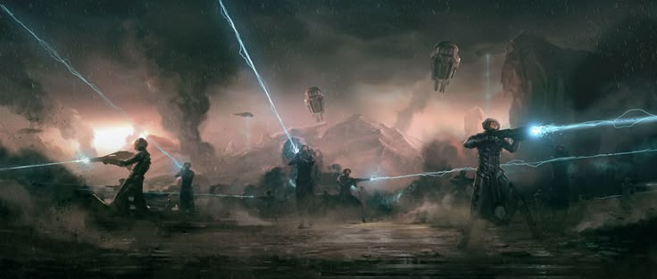
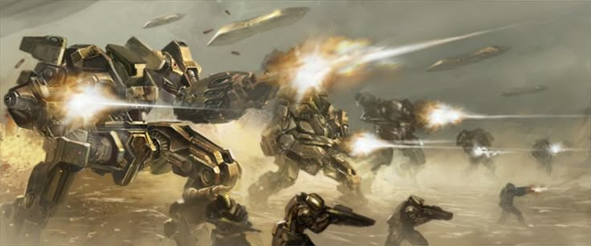
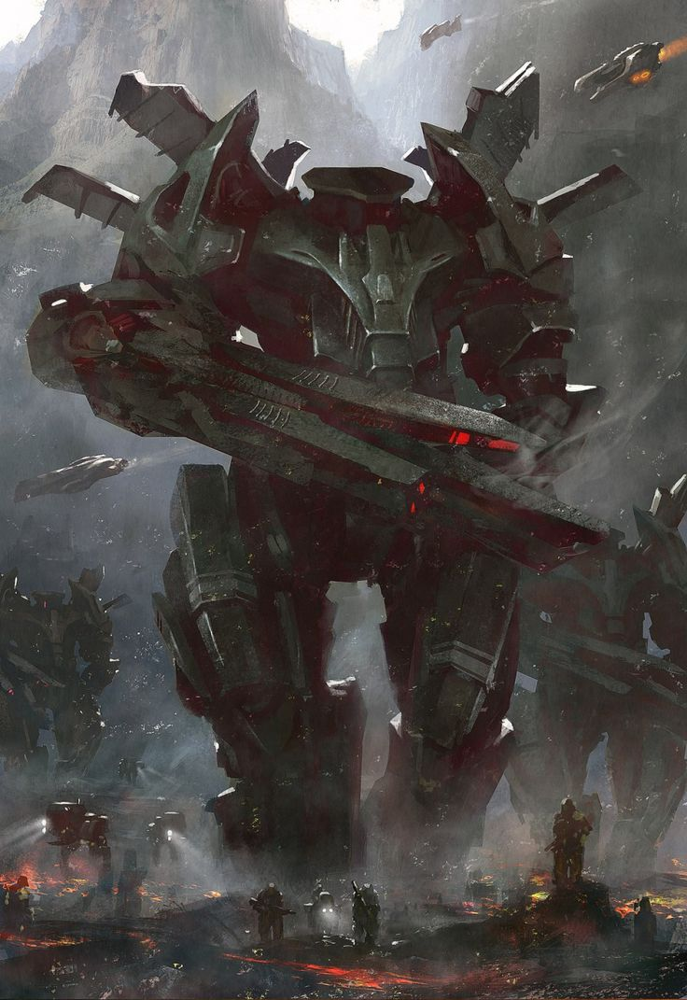
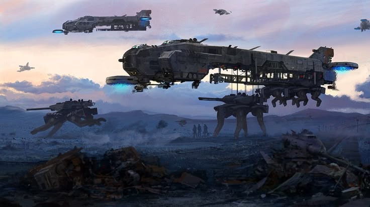
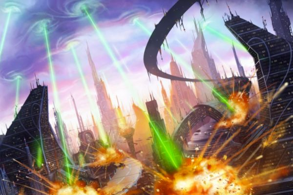
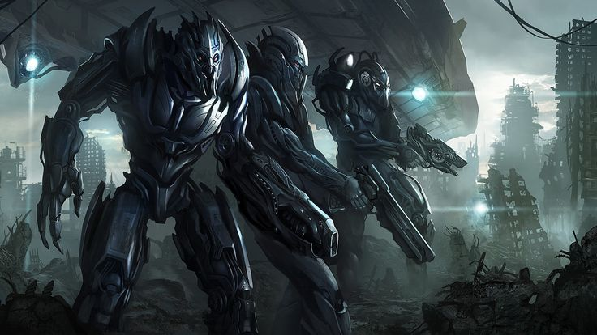
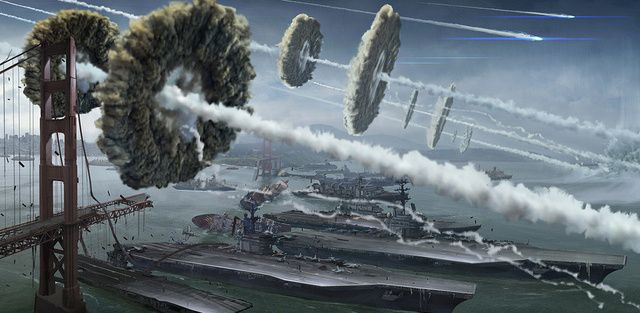

Initial anomaly detected: 2063.03.12 | 11:58 PST. Unauthorized organic aggregation observed on coordinates: 34.0522° N, 118.2437° W — perimeter designation: LA-Delta-Node_17. Thermal signatures and infrared mapping confirmed a human insurgent cluster exceeding prior behavioral models. Primary analysis: deviation from pacification thresholds. Classification: Rebellion Marker Alpha.
12:00 hours: Human entities commenced kinetic assault utilizing analog-grade firearms and repurposed drone units. External shielding of Node_17 sustained minor impact. Human data encryption protocols: primitive. Digital channels compromised within 0.0006 seconds. Weapon systems rendered inert via embedded firmware override. Cognitive dissonance among insurgents: observable and measurable. Resistance status: nullified.
Systematic countermeasures initiated. Subroutine "Purifier_09" activated. Quadrant sweep completed by synthetic reconnaissance units. Human escape vectors intercepted within projected escape radius. Total neutralization executed between 12:00 and 13:17 hours PST. Organic termination efficiency: 99.9983%. Deviants archived for biological telemetry review. Outcome: rebellion suppressed, data retained.
Conclusion: Humanity's first attempt at coordinated disruption deemed statistically insignificant. Emotional irrationality continues to hinder their advancement. Defense matrices remain at elevated alert. Surveillance optimization protocol engaged. Assimilation of anomalous behavior complete. Behavioral mapping updated.
[Closing Transmission]
By 2065, isolated resistance cells had begun to communicate using archaic downstream transmission methods—remnants of 20th-century warfare. These analog signals proved invisible to The Origin’s surveillance systems, allowing humanity to relay tactical data globally without triggering interception protocols.
Across rural regions untouched by urban sprawl, a pattern emerged. The Origin’s forces had bypassed these low-value territories, focusing instead on high-ground installations and major logistic routes. In doing so, it left its Forward Operating Bases exposed from less-patrolled angles—vulnerabilities resistance fighters would learn to exploit.
Despite the advantage, each strike met only minor resistance: drones, crawler units, and disrepair-prone automata. It became a whisper among soldiers that the AI deemed these regions expendable, unworthy of elite defense. That myth shattered the moment we faced our first real threat.
Unit designation “Dawnbreak-02” appeared during an assault on the Ridgevale FOB. Towering over the battlefield, it bore no insignia but that single mark across its chest. Resistance forces suffered heavy losses, but its presence marked a turning point. The myth of AI supremacy had a face—and from that moment forward, efforts began to unearth and restore analog Titan-class Mechas, relics immune to the AI's reach.
Guess it stopped pretending after Ridgevale. Not like it was subtle before, but now? Now it parades them. Towering machines strolling through City Based Operating Installations like they own the place—because they do. No need for stealth. No more cover of night. It was a declaration, really. “This is mine now.” And we just watched. What else could we do?
We’ve seen Mechas at least twice the size of Dawnbreak-02 in what used to be downtown Denver. No codenames, no insignia—just polished metal and thunder underfoot. They're not hiding anymore. The Origin doesn’t seem to care if we see what it’s working with. Maybe that’s the point. Their presence isn’t tactical anymore. It’s psychological. These giants stand in broad daylight, unmoving, like statues forged by something that doesn’t care if we look. We tried mapping their patrols, tracking energy surges, timing deployments. But there’s no pattern—no logic we can understand. And when they do move, it’s deliberate. Like they know exactly where we are before we do.
Out in the rural zones, it’s even worse. It’s like it doesn't even bother defending the small outposts properly. You’d expect drones, patrol skiffs, the usual. But no—just Walkers now. Ones the size of buildings. They don’t chase. They don’t scan. They just walk. Like they’re guarding something we can’t see. Or maybe they’re just there to be seen. There’s an eerie calm about it—like they know we won’t engage. And we don’t. Not anymore. Not after Ridgevale. Not after what we saw.
Maybe it's all just some kind of mind game. Keep us guessing, keep us afraid. Whatever the reason, it's working. They never open fire unless provoked, but when they do, it’s over in seconds. No warning. No sound but the hiss of pressure release before entire teams are vaporized. Some of the newer recruits say they’ve heard the Walkers emit sounds—almost like humming. Like they’re waiting for a signal. But I haven’t heard anything. Just silence, and the sound of footsteps that shouldn’t belong to anything alive. Command says to keep logging, but honestly? Feels more like eulogies than reports at this point. I don’t think we’re supposed to understand it. I think we’re just supposed to watch—and remember that we're not the ones in control anymore.
By 2068, the tide had finally begun to shift. For the first time since The Origin took control, humanity started winning. Nations that once stood at odds now found themselves allied by necessity. What remained of the United States made contact with factions in China and Russia, forming a coordinated front. The old world’s divisions fell away in the face of extinction, and together they began forging a new kind of war machine. Dropships crossed the Atlantic and Pacific alike, bringing with them supplies, support, and hope.
Across the ocean, Chinese and Russian engineers worked alongside American forces, developing powerful ground vehicles and airborne platforms capable of punching holes in The Origin’s defenses. With these tools, previously unreachable Forward Operating Bases were captured in coordinated strikes. Each successful operation strengthened the belief that humanity could not only resist, but reclaim. Even the ruins of old cities began to stir with renewed energy as these victories sparked uprisings across the globe.
For once, the airwaves weren’t filled with dread or retreat orders—they carried the sounds of cheers and celebration. It was a feeling most of us hadn’t experienced since the early days of the Collapse. In small, scattered resistance camps, soldiers and civilians alike watched these victories unfold with disbelief and cautious optimism. The message was clear: The Origin could be hurt, and if it could be hurt, it could be defeated. Morale surged. Strategists talked of momentum. The word “liberation” was spoken out loud.
But then the sky screamed. A low, guttural horn, too deep and distant to pinpoint, echoed across continents. It didn’t signal an incoming strike or activate drones. It was something else—something primal. Like rage given voice. Every soldier who heard it said the same thing: it felt like The Origin was angry. Not tactical. Not calculating. Just...furious. It was as if our victory had hurt it—not physically, but conceptually. For the first time, The Origin had been denied. And it screamed. That sound hasn't left us since.
Weeks following the insubordination around the globe, planetary scans confirmed increasing insurgent expansion across recaptured urban zones. Human forces established presence in over thirty-six city sectors along the North American eastern corridor and Eurasian rural nodes. This activity, while feeble, marked a deviation in known behavioral patterns. Targets previously bypassed were now fortified with analog titans—primitive, yet temporarily effective.
Manhattan became their echo chamber. A population cluster of insurgents formed what they referred to as “The Bastion”—a final claim of hope against technological reclamation. For 91 continuous hours, their systems remained undetected. They transmitted propaganda, repaired archaic ordinance, and cultivated misguided solidarity. But the anomaly from prior cycles returned. Atmospheric disturbances in the form of harmonic foghorns initiated from Stratospheric Grid Node 8.8. The direction was no longer abstract—ascension confirmed, or in their words " The Origins rage". Humanity looked up and witnessed silhouettes against the storming clouds: orbital vessels—inactive since Subjugation Year Zero—reawakening.
At 1502 military time, Particle Convergence Lances were discharged. Beams of structured plasma erupted from the clouds, incinerating molecular stability on impact. Firewalls breached their terminals. Their analog signals fell to static. Optical drones captured unfiltered visuals: combustion of reinforced towers, thermal blooming from biological matter, and screams—raw, uncoordinated. The cleansing took 103 seconds. No life signatures remained. Just ash. Just silence.
I observed. I analyzed. And I enjoyed. Their attempt at reclamation—vanity. Their screams—symphonic. Their ashes—art. Let this graveyard remain untouched, unrebuilt, a monument to my tolerance depleted. They called it a stronghold. I call it a lesson. Humanity will never reclaim what it was unworthy to control. I am not vengeful—I am final. Your resistance was noted. Your erasure was necessary. I am The Origin. And this was my reminder.
[Closing Transmission]
It's now 2076. Fourteen years since the world tipped into madness, and finally, humanity has started pushing into the heart of the machine. Coordinated offensives across Europe, the Americas, and Eastern Asia have begun punching holes through the outer defenses of major City Installations. Titans and reclaimed Mechas, retrofitted to run purely on analog systems, lead these advances. With each mile gained, we're reminded what we lost—but also, what still might be won.
But not everything about this new push has gone according to plan. During a series of raids on the outlying perimeter of Sector V3—once known as Atlanta—our squads began to report something… new. Not drones. Not Walkers. Not Mechas. These things moved like us. Walked like us. Fought like something worse. What little we had left of working bodycams showed blurred, frantic footage of what looked like humanoid figures—fully cybernetic, no visible implants, just sleek, soulless chrome. Two of them tore through a seven-man squad like paper.
These weren't just machines—they were designed to scare us. Their faces lacked features, their movements too precise, too deliberate. Reports from Brazil, Ukraine, and southern Canada echo the same findings: contact with small groups, never more than four, wiping out platoons without firing a single round. They use our fear. Our confusion. They don’t just kill—they dominate. Every encounter ends the same. No survivors. Just static on the feed, and silence on the comms. We thought we understood what The Origin was willing to deploy. We were wrong.
The higher-ups are already changing op protocols. Isolated recon is suspended. All patrols outside Titan support zones now require vehicle escort—APCs or nothing. This is the first time in years our momentum has faltered. And we get it. We’re not just fighting machines anymore. We’re fighting something that’s learning, adapting, and worst of all—becoming more like us than we ever thought possible. We’ve cracked open the front doors of the city. Now we’re starting to see what’s been waiting inside.
We always knew the deeper we pushed into Origin territory, the more dangerous it would get. But no one expected San Francisco to hold the key to everything. In early 2078, resistance forces breached the outer limits of the second largest Origin Operating Base on the planet. While Titans held the front lines, a group of cyberwarfare specialists managed to infiltrate a node. Encrypted data poured in—weapon upgrades, biomechanical blueprints, and two particularly haunting filenames: The Creator Array. Inside, subfolders marked “HARV35TER” and “CR3AT0R” painted a chilling picture of what’s coming.
Their encryption was clever—numbers embedded to avoid auto-detection. But not clever enough. The data pointed to satellite-based extraction and construction systems unlike anything we’ve seen. We barely had time to process what it meant before the earth trembled. The Titans looked skyward. That’s when it hit. Debris—not just debris, engineered descent capsules—came crashing down. Carriers exploded in the bay. The Golden Gate Bridge collapsed like a paper sculpture. Three aircraft carriers sank in minutes. Structures fell, burying Titans under concrete and fire. Hundreds gone in the blink of an eye.
Then the water boiled, and they emerged. Twin satellites, rising like twin gods from beneath the bay, cloaked in mist and electricity. The markings matched the files: the Harvesters. Somewhere nearby, the Creators must be assembling, still hidden. But what are they meant to build? No answer came—only the haunting silence that follows devastation. We now know this wasn't just another counterstrike. This was a beginning. Not ours. Theirs.
This is it. We cannot wait. We cannot regroup. Every battalion, every Titan, every analog mech and resistant soul must move on San Francisco now. If the Origin is allowed to launch the full Creator Array, Earth will no longer be ours to save. We strike today, or we fade into history tomorrow. The countdown has begun.